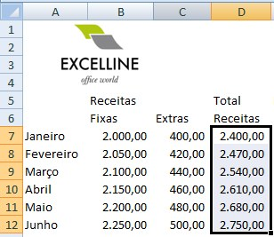
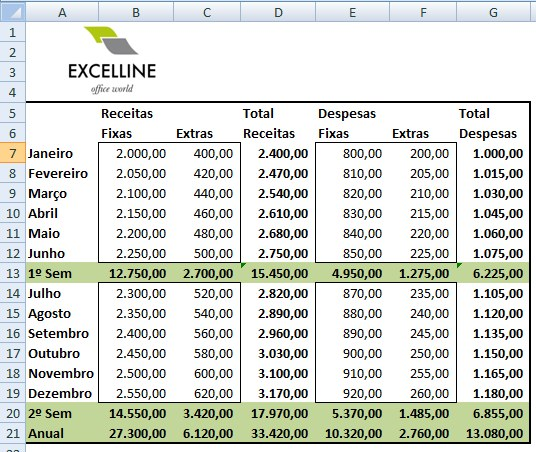
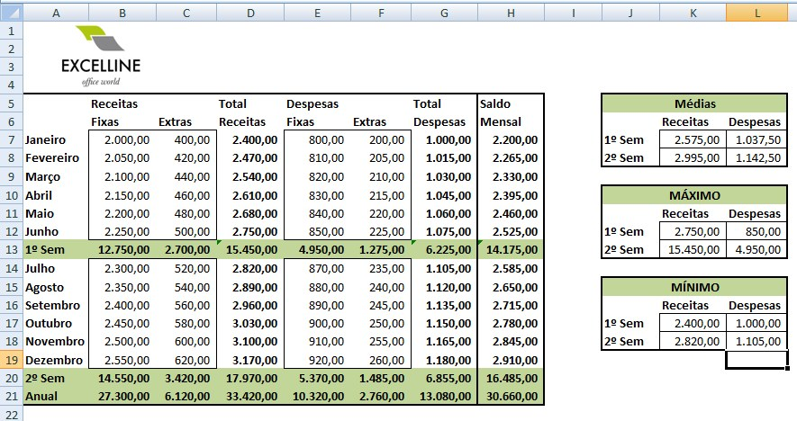

A função SOMA é provavelmente a mais usada do Excel e a MÉDIA vem logo atrás. Junto com MÁXIMO e MÍNIMO elas formam o kit básico de qualquer análise numérica e aprendê-las bem significa dominar a lógica de intervalos que vale para todas as outras funções.
Baixe a planilha do exercício: modelo-excel-funcoes-essenciais.xlsx. Ela traz os exemplos deste capítulo com as fórmulas funcionando: altere os valores azuis e veja o resultado. Traz receitas e despesas por semestre, o quadro de média, máximo e mínimo e a soma tridimensional das lojas.
SOMA: intervalos com dois pontos e células soltas com ponto e vírgula
A estrutura é simples, =SOMA(INTERVALO) e o intervalo pode ir de uma célula até outra ou juntar células soltas, sem limite de quantidade. Na planilha de receitas e despesas do exercício, o total de receitas fixas do primeiro semestre fica em B13 com a fórmula:
=SOMA(B7:B12)
Os dois pontos significam "até", então a leitura é "some de B7 até B12". Se qualquer valor desse intervalo mudar, o total se recalcula sozinho.

Para aplicar a mesma fórmula a um intervalo inteiro basta selecionar as células, digitar a fórmula e encerrar com CTRL+ENTER, que a replica em todas as células da seleção. O AUTOSOMA da barra de ferramentas também preenche várias células de uma vez quando as selecionamos juntas com a tecla CTRL.
Já o ponto e vírgula define células isoladas, "uma e outra". Para totalizar os dois semestres no ano usamos:
=SOMA(B20;B13)

SOMA em três dimensões
Com planilhas de mesma estrutura em sequência, como as três lojas do capítulo anterior, a função soma a mesma célula de todas elas, de uma planilha até a outra:
=SOMA(Calafate:Gutierrez!B3)
A leitura é "some, de Calafate até Gutierrez, a célula B3".
MÉDIA, MÁXIMO e MÍNIMO
Com a planilha pronta criamos um quadro à direita para resumir os dois semestres. A MÉDIA é a aritmética simples, a soma dos valores dividida pela quantidade deles.
=MÉDIA(D7:D12)
O MÁXIMO devolve o maior valor do intervalo e o MÍNIMO o menor e ambos aceitam um intervalo ou células separadas por ponto e vírgula.
=MÁXIMO(D7:D12) =MÍNIMO(D7:D12)

Guarde o arquivo do exercício, porque ele serve de base para os próximos capítulos.
Próximo passo
Para somar ou contar apenas o que atende a uma condição, o passo seguinte é conhecer SOMASE e CONT.SE.
Comentários
Dúvida, discordância ou outro ponto de vista? Escreva aqui e eu respondo.